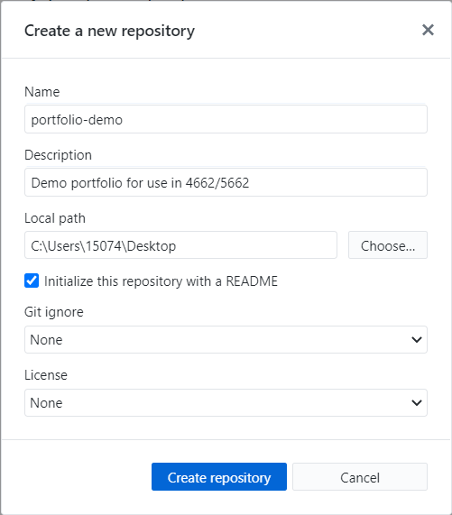
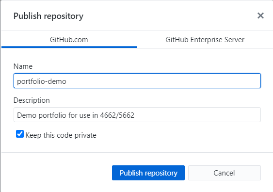
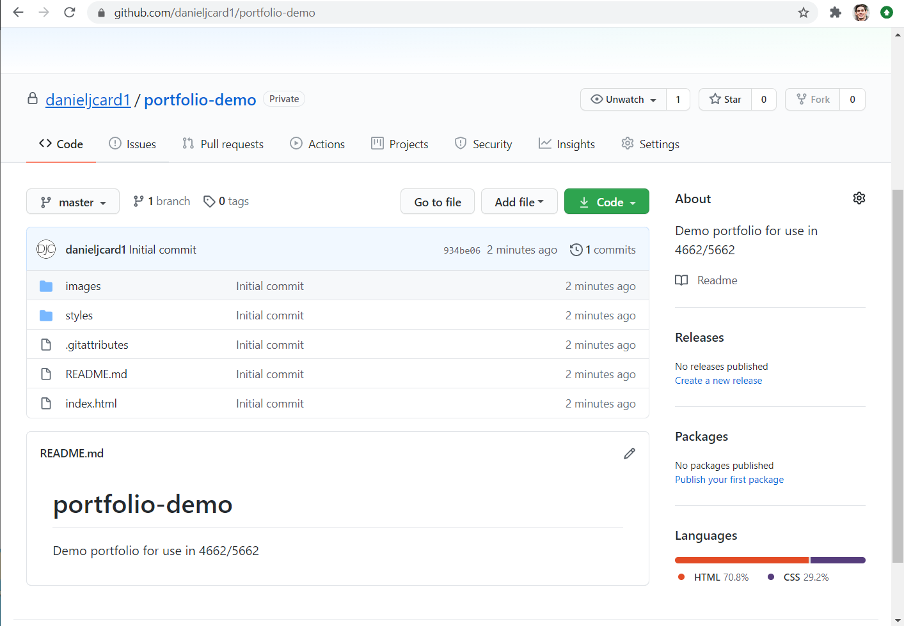
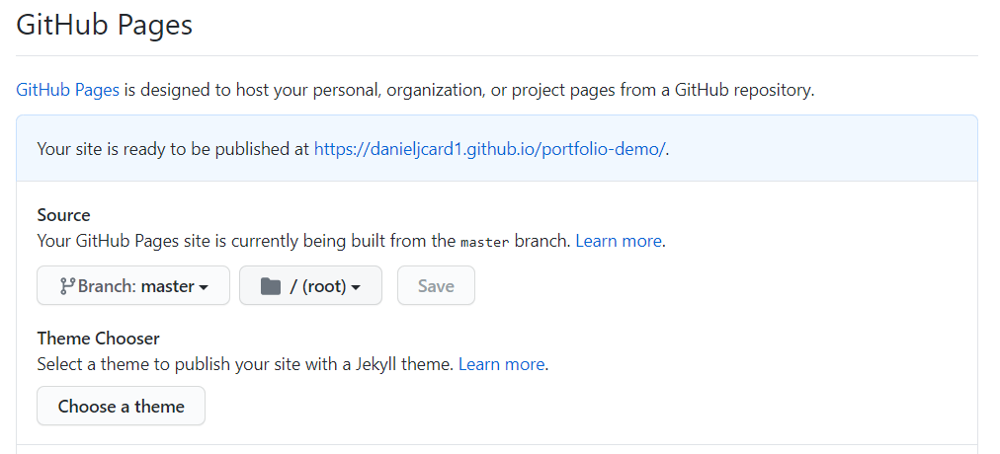

Publish your site with Github pages¶
This guide aims to help you publish a simple static site with Github Pages. It assumes some background knowledge of Git and Github.
If you don't already have a Github account, you can make one now. This guide was written with user accounts in mind, but you may have the option to sign up under an enterprise account. I'll leave it to you to decide what account type makes the most sense.
I've included links to Github's Pages tutorial below (option 2), but I think many will prefer to use Github Desktop. Or better yet, you can try it both ways!
At any rate, I encourage you to see the remainder of this guide not as a comprehensive step-by-step walkthrough, but rather as a supplement to Github's official documentation and the many other great resources.
Option 1: Use Github Desktop¶
Use Github Desktop to turn the website folder on your desktop into a git repository, push the repository to Github, then publish to site using Github pages.
- No command line
- Requires Github Desktop
Create your first repository with Github Desktop¶
Navigate to Creating your first repository with Github Desktop. Read the introduction, install Github Desktop and authenticate your account.
If this is your first time using Github, I recommend creating and cloning the tutorial website as directed. Alternatively, you can skip down to "create a new repository".
Upon selecting "Create a new repository", you should have the option to tell Github Desktop what folder you'd like to use. You can tell it to create the repository in an existing folder or in a new folder, in which case you can add your HTML and CSS files into the folder after the fact.
I already have a folder on my desktop called "portfolio-demo", so I'm putting the name of that folder in name and adjusting the local path. I'm also opting to initialize the repository with a readme.

Publish your repo to Github¶
Once you create the repository, Github Desktop will recognize it as a Git repository. Now we can "publish" the repository to Github.com. You'll have to make the repository public if you want to host the site with Github Pages, but you can always change the settings.

Once you've finished publishing the repository, navigate to github.com (sign in if you aren't already) and find your repository.

Publish your site with Github Pages¶
From your repo page on Github.com, select "settings" and scroll down to "Github Pages." Change the source to "master" and select the folder "root."

You should now be able to click the URL that follows "Your site is published at" to see your site live! If the link doesn't work immediately, wait a few minutes and try again.
You can see my demo portfolio live at https://danieljcard1.github.io/portfolio-demo/.
Option 2: Follow the tutorial at pages.github.com¶
- Github Desktop not required
- Some command line recommended
- Github gives it's users one user site and unlimited project sites, so for now I recommend you select "project site".
Tutorial: pages.github.com